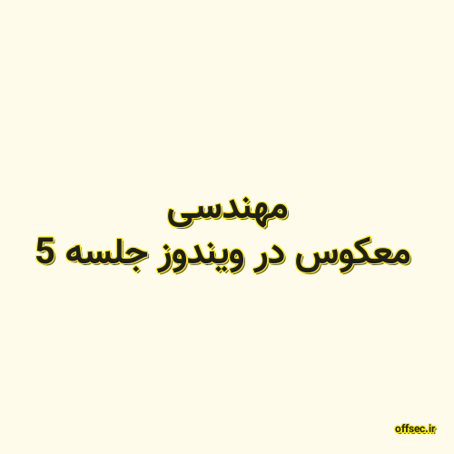

✖

مهندسی معکوس در ویندوز جلسه 5
جمع بندی کلی
بررسی متد های رایج استفاده شده در بد افزار ها
بررسی روش های بایپس درایور ها
ساختار کلی درایور آبجکت ها در ویندوز
offsec.ir 2020-08-19 22:12:00 مطالعه پست گزارش خرابی لینک / محتوای مجرمانه / تغییر محتویات لینک